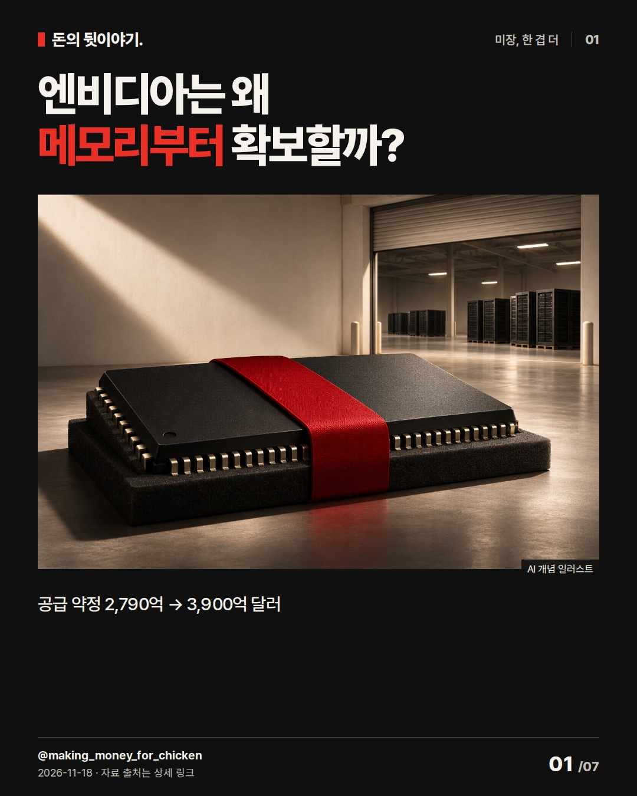
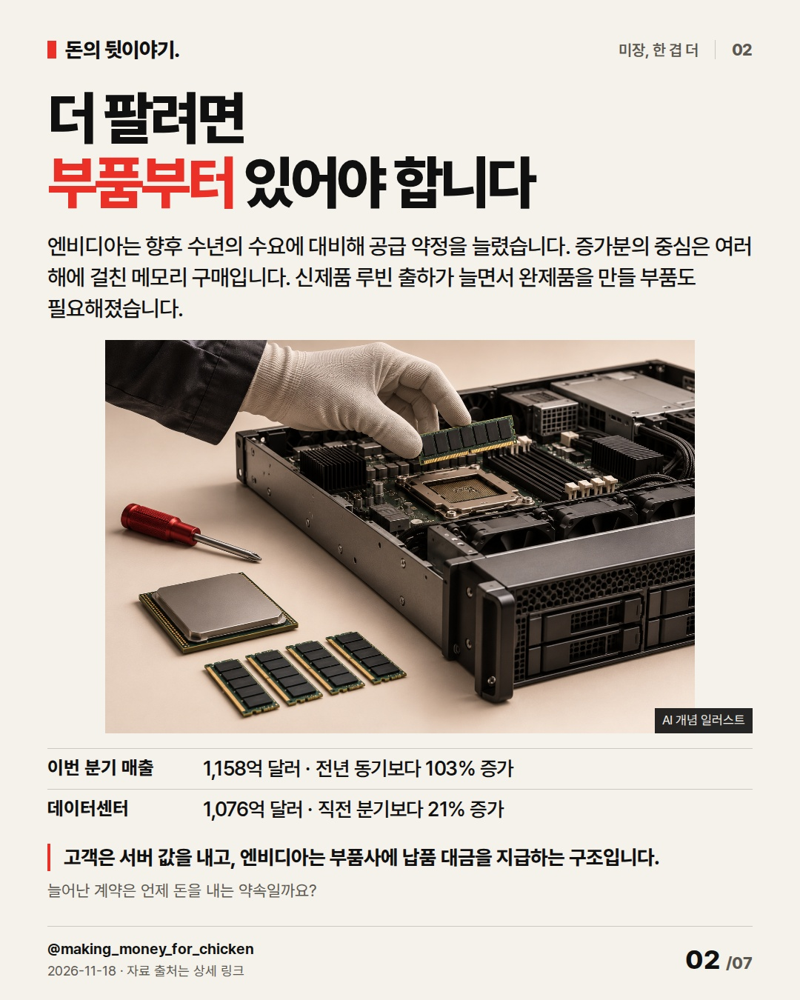
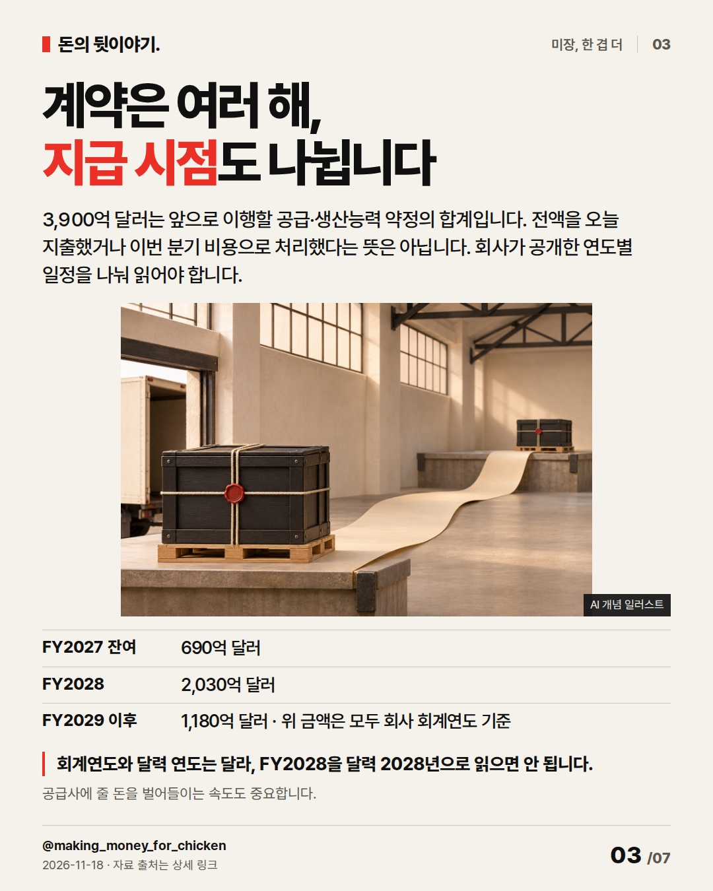
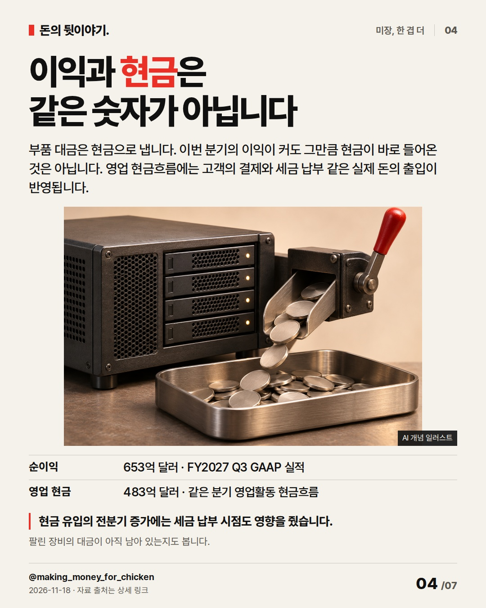
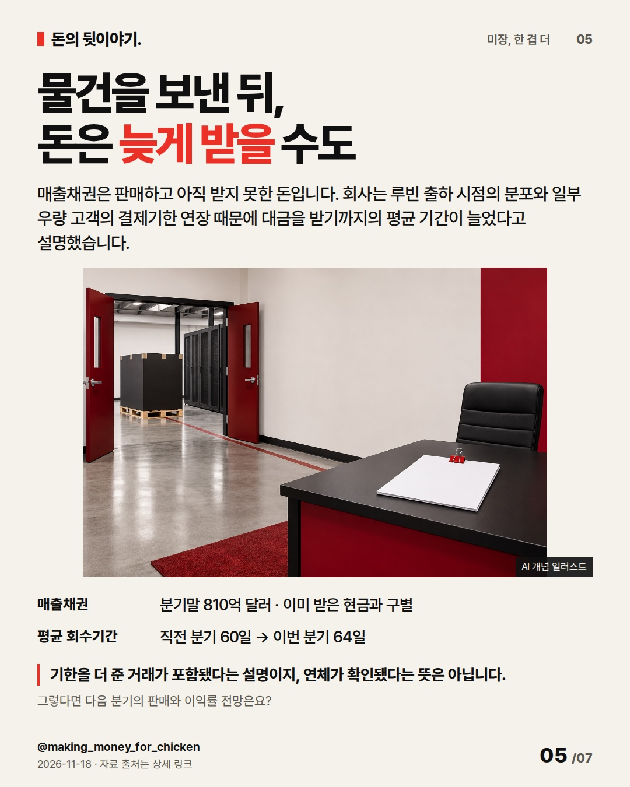
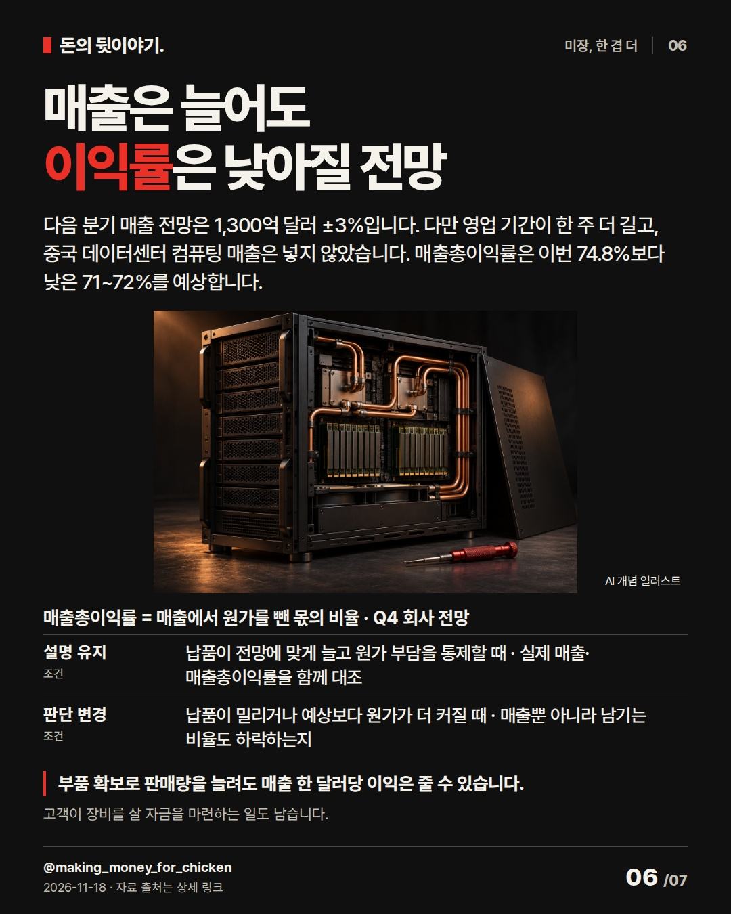
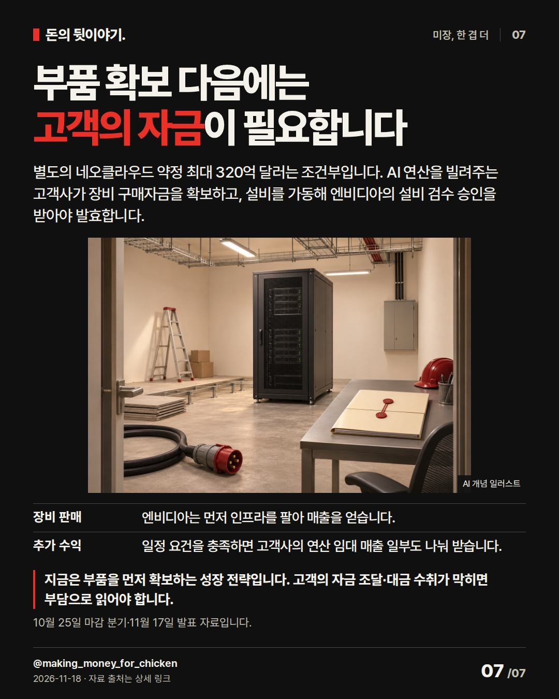

엔비디아의 공급 약정은 3,900억 달러로 늘었지만, 그 돈이 오늘 한꺼번에 나간 것은 아닙니다. 부품을 먼저 확보하는 선택이 성장으로 이어지려면 지급 일정과 고객의 대금 결제를 함께 봐야 합니다. #엔비디아 #미국주식 #AI반도체

공급 약정 2,790억 → 3,900억 달러
AI 생성 개념 일러스트 · 실제 현장이나 공식 제품 사진이 아닙니다.

엔비디아는 향후 수년의 수요에 대비해 공급 약정을 늘렸습니다. 증가분의 중심은 여러 해에 걸친 메모리 구매입니다. 신제품 루빈 출하가 늘면서 완제품을 만들 부품도 필요해졌습니다.
고객은 서버 값을 내고, 엔비디아는 부품사에 납품 대금을 지급하는 구조입니다. 늘어난 계약은 언제 돈을 내는 약속일까요?
AI 생성 개념 일러스트 · 실제 현장이나 공식 제품 사진이 아닙니다.
3,900억 달러는 앞으로 이행할 공급·생산능력 약정의 합계입니다. 전액을 오늘 지출했거나 이번 분기 비용으로 처리했다는 뜻은 아닙니다. 회사가 공개한 연도별 일정을 나눠 읽어야 합니다.
회계연도와 달력 연도는 달라, FY2028을 달력 2028년으로 읽으면 안 됩니다. 공급사에 줄 돈을 벌어들이는 속도도 중요합니다.
AI 생성 개념 일러스트 · 실제 현장이나 공식 제품 사진이 아닙니다.
부품 대금은 현금으로 냅니다. 이번 분기의 이익이 커도 그만큼 현금이 바로 들어온 것은 아닙니다. 영업 현금흐름에는 고객의 결제와 세금 납부 같은 실제 돈의 출입이 반영됩니다.
현금 유입의 전분기 증가에는 세금 납부 시점도 영향을 줬습니다. 팔린 장비의 대금이 아직 남아 있는지도 봅니다.
AI 생성 개념 일러스트 · 실제 현장이나 공식 제품 사진이 아닙니다.
매출채권은 판매하고 아직 받지 못한 돈입니다. 회사는 루빈 출하 시점의 분포와 일부 우량 고객의 결제기한 연장 때문에 대금을 받기까지의 평균 기간이 늘었다고 설명했습니다.
기한을 더 준 거래가 포함됐다는 설명이지, 연체가 확인됐다는 뜻은 아닙니다. 그렇다면 다음 분기의 판매와 이익률 전망은요?
AI 생성 개념 일러스트 · 실제 현장이나 공식 제품 사진이 아닙니다.
다음 분기 매출 전망은 1,300억 달러 ±3%입니다. 다만 영업 기간이 한 주 더 길고, 중국 데이터센터 컴퓨팅 매출은 넣지 않았습니다. 매출총이익률은 이번 74.8%보다 낮은 71~72%를 예상합니다.
부품 확보로 판매량을 늘려도 매출 한 달러당 이익은 줄 수 있습니다. 고객이 장비를 살 자금을 마련하는 일도 남습니다. 매출총이익률 = 매출에서 원가를 뺀 몫의 비율 · Q4 회사 전망
AI 생성 개념 일러스트 · 실제 현장이나 공식 제품 사진이 아닙니다.
별도의 네오클라우드 약정 최대 320억 달러는 조건부입니다. AI 연산을 빌려주는 고객사가 장비 구매자금을 확보하고, 설비를 가동해 엔비디아의 설비 검수 승인을 받아야 발효합니다.
지금은 부품을 먼저 확보하는 성장 전략입니다. 고객의 자금 조달·대금 수취가 막히면 부담으로 읽어야 합니다. 10월 25일 마감 분기·11월 17일 발표 자료입니다.
AI 생성 개념 일러스트 · 실제 현장이나 공식 제품 사진이 아닙니다.{
"improvement": "11/10·11/11·11/12·11/16·11/17 원고·편집기록과 실제 25장을 비교했습니다. 11/10의 1·2장 및 3·5장 결론 반복을 피하고, 이번에는 공급 확보→지급 일정→현금→고객 결제를 매 장의 새 이유로 연결합니다. 유지할 핵심은 선제 조달이 성장 기회를 열지만 고객의 결제 능력을 대신하지 않는다는 점입니다.",
"reason": "불스토리 ‘엔비디아 실적 이후, 주가를 가를 세 가지 시나리오’ 웹 본문 전체에서 주문·평가·시차 구별을 참고했습니다. 최신 Instagram 목록은 비었고 DdSm9U9EuGm의 1·4·5장 이미지 접근은 403으로 실패해 전 장 디자인을 봤다고 기록하지 않습니다. 홍춘욱 2/13 CEO Letter 서명 원문의 AI 성장·투자 사이클 구별을 보완 참고했습니다.",
"application": "제목 ①왜 메모리부터 확보할까 ②매출 두 배, 공급 약정은 ③3,900억 달러의 부담 중 구체적 선택을 묻는 ①을 채택했습니다. 6장 초안 ‘더 팔겠지만, 남기는 비율은 낮아집니다’를 ‘매출은 늘어도, 이익률은 낮아질 전망’으로 고쳐 전망임을 제목에도 표시했습니다. 7장 정규장 종가 항목을 빼고 장비 판매·조건부 수익배분을 넣어 돈의 경로를 보강했습니다.",
"avoided_repetition": "전망 총액과 메모리 구매만을 혼동하는 보도 제목, CEO 논란, 국내 수혜주 연결, 현금잔액 대비 다년 계약 비율을 뺐습니다. Morning Brew 3/21 본문은 주체별 거래 경로만 보조 참고했고 CNBC·Bloomberg 원문은 접근 실패했습니다. 반응 지표는 미확보입니다. 다음에는 지급 일정과 실제 집행의 차이를 새 공시로 검토하되 이번 편의 결론을 재게시하지 않습니다."
}투자 참고용 · 매수·매도 권유 아님.